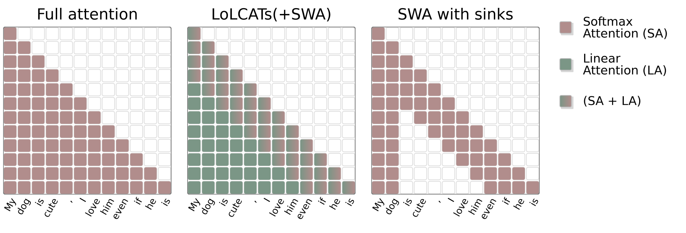

Sliding-Window Beats Linear Attention: The Missing Baseline for Linearization
TL;DR
- "Sliding-window beats linear attention" (arXiv 2608.28444; Alexia Jolicoeur-Martineau, Rhea Sanjay Sukthanker, Pashmina Cameron — Microsoft ASG; Emy Gervais) makes a baseline argument: before post-training a pretrained LLM into linear attention (LoLCATs, Liger-GLA, SUPRA, MOHAWK, QRWKV…), you should compare against just changing the attention mask to a sliding window with 4 attention sinks — zero training tokens, standard FlashAttention kernels.
- Across 11 model settings (1.3B–72B, Phi/Mistral/Llama/Qwen), SWA(64, 4 sinks) recovers 93.2% of teacher MMLU and 99.0% of the 6-benchmark average — best or tied-best in 9 of 11 cases, beating linearization methods that spent 20M–20B post-training tokens.
- On long-context tasks the gap is dramatic: at 4K context, SWA recovers 17–23% of full-attention S-NIAH accuracy vs ≤5.8% for LoLCATs and ≤0.8% for Liger-GLA; on BABILong-4K, 15% vs 3%. The recommendation: for fixed-memory inference, use training-free SWA+sinks; linear attention likely needs from-scratch pretraining to even match it.
Why this matters
A whole research line sells linearization as "quadratic → linear at low cost": take a pretrained softmax transformer, swap attention for a linear/recurrent form, recover performance with modest post-training. The pitch matters because the KV cache is the binding constraint on serving long contexts and long reasoning traces. This paper's charge is that the line has been benchmarked against the wrong control. Most linearization papers compare against sink-free SWA — which is known to collapse catastrophically once the first tokens leave the window (the attention-sink phenomenon, Xiao et al. 2024). Add the 4 sink tokens back and the "simple baseline" stops being a strawman: it is training-free, runs on FlashAttention (no exotic kernels), gives a fixed-size cache, and — per this paper — matches or beats the linearized models those methods produce, especially anywhere retrieval over context is involved.
For this tracker the meta-lesson is as valuable as the result: an evaluation-hygiene paper that reorders a subfield's cost-benefit table without training anything. Every linearization result now needs a "vs SWA+sinks" row, the same way every RAG paper needs a BM25 row.
The core idea
Standard causal self-attention computes, for each position \( t \):
with \( \mathbf{q}, \mathbf{k}, \mathbf{v} \) the query/key/value projections and \( d \) the head dimension — \( \mathcal{O}(DL^2) \) compute and an ever-growing KV cache. SWA(\(w\), \(s\)) restricts the sum to the last \( w \) tokens plus the first \( s{=}4 \) sink tokens:
(the sink extension of the window sum is my compression of the paper's mask description — the paper writes the pure-window form and specifies sinks in the mask). The receptive field still grows with depth (~\( lw \) after \( l \) layers), and the sinks absorb the "parked" attention mass that pretrained LLMs dump on early tokens; without them, performance is "horrendous" the moment sinks scroll out of the window.
Linear attention instead replaces the exponential with a factorized kernel \( \exp(\mathbf{q}_t\mathbf{k}_i^\top)\approx\phi(\mathbf{q}_t)\phi(\mathbf{k}_i)^\top \), collapsing history into a fixed-size recurrent state:
— \( \mathcal{O}(1) \) per token, but the state must continuously decide what to overwrite, and retrofitting it onto a softmax-pretrained model requires post-training (Hedgehog's learnable kernel \( \phi(x)=(\exp(f(x)), \exp(-f(x))) \), LoRA in LoLCATs, multi-stage distillation in MOHAWK/Llamba…).

Figure 1 from the paper: full attention, LoLCATs(+SWA) (linear attention backfilling everything outside the window), and SWA with sinks — the paper's claim is the green region isn't earning its post-training cost.
How it works
There is no training loop; the "method" is an evaluation protocol:
Protocol: linearization vs the training-free control
for each base LLM (Phi-1.5, Mistral-7B, Llama-2/3.0/3.1 (8B,70B),
Qwen2.5 (7B,32B,72B), QwQ-32B):
teacher = full attention (upper bound)
control = same weights, mask switched to SWA(w=64..512, s=4) # 0 tokens
competitors = published linearized versions of the same base
(SUPRA, Hedgehog, LoLCATs, Liger-GLA, MOHAWK,
Mamba-in-the-Llama, DiJiang, ARWKV, Llamba, QLinAtt, QRWKV6/7)
evaluate:
short-context: MMLU-5shot, ARC-C/E, HellaSwag, PIQA, WinoGrande
long-context: S-NIAH-1/2/3 at 0.5K–4K (Llama-3.1-8B base, w=128/256/512)
BABILong QA1–5 at 0K–4K (w=256)
systems: decode throughput + cache/state memory, 128→256K ctx
report recovery = student score / teacher score
exclusions: hybrid models with full-attention layers (fairness)
Notation: SWA(\(w\), \(s\)) = window \( w \) (64–512 across experiments), sinks \( s{=}4 \) always. FA and SWA use FlashAttention backends; linear attention uses ThunderKittens kernels; LoLCATs uses the fused SWA+linear kernel at \( w{=}256 \).
Results
Short-context knowledge/reasoning (Table 1–2). SWA(64, 4) — a 64-token window! — recovers 99.0% of the average teacher score and 93.2% on MMLU, the best MMLU recovery of any method; QRWKV6 is the only serious rival (99.1% average) and it costs 350–700M post-training tokens across 3 stages. LoLCATs at 40M tokens recovers just 83.2% of MMLU. SWA takes the best non-teacher average in 9/11 settings; the exceptions are LoLCATs on Phi-1.5 (62.5 vs 62.4 — a rounding-level win) and QRWKV6 on Qwen2.5-32B. On QwQ-32B, SWA loses nothing (75.2 = teacher).
Long-context (Tables 3–4). This is the demolition. S-NIAH at 4K context, window 512: SWA scores 19.0/23.0/23.0 across the three needle tasks; LoLCATs manages 8.8/16.6/5.8; Liger-GLA ≤0.8 essentially everywhere past 1K. BABILong at 4K: SWA 15 vs LoLCATs 3 (full attention: 60). The post-trained linear models don't degrade gracefully — they fall off a cliff as soon as retrieval must reach beyond the softmax window, because the recurrent state has already overwritten it.
Speed/memory (Figure 2). SWA is the fastest method at every context length (flat throughput while FA decays past 1K), and at \( w{=}64 \) has the lowest memory of all — below the linear-attention state. At \( w{=}512 \) its cache exceeds linear attention's state; the crossover is the honest price of the approach.
How it connects
- Prefix Sliding for Efficient Test-Time Scaling (prefix-sliding): the same mask philosophy applied to reasoning traces — keep the prefix (≈ the sinks + instructions/tools, semantically load-bearing) plus a recent window, discard the middle. Together they suggest "prefix + recent window" is a robust default at both the architecture and the trace level.
- Learning How to Forget (tracked today, Amazon): the complement. This paper is training-free SWA at inference; that one shows fine-tuning matched to the inference cache policy removes the degenerate behaviors that appear when training assumes full attention. The two bracket the obvious next experiment: SWA+sinks with a small amount of policy-matched post-training (the paper cites Yu et al. 2025 that post-training boosts SWA further).
- How Pretraining Choices Hurt Long-Context Extension (tracked): found SWA-pretrained models extend worse to long contexts — a caution that SWA-as-mask at inference and SWA-as-pretraining-choice have different failure modes; don't conflate this paper's recommendation with "pretrain with SWA."
- Maglev: Sliding Recurrent Memory via Teacher-Provided States (tracked) and the retrofit-TTT line: attempts to get the best of both — recurrent compression plus softmax locality. This paper's tables are the baseline those hybrids must now clear.
- Qwen3.8-Flash Tech Report (tracked today): production reality check — frontier efficient models are going hybrid (3 GDN layers : 1 sparse-softmax layer), which this paper deliberately excluded from comparison. The paper's claim is about pure linearization retrofits, not about linear-attention components inside architectures pretrained for them.
Critical take
The headline verb ("beats") is doing marketing work; the precise claim is narrower and stronger: post-hoc linearization of softmax-pretrained models has been beating a strawman control. Oliver Sieberling's commentary (quoted in the tracked thread) puts the sharpest frame on it: when you adapt a strong pretrained model with little data, the least-invasive modification wins almost by construction — swapping a mask is minimally invasive, swapping the attention operator is maximally so. Read that way, the paper doesn't show sliding windows are better than linear attention as a mechanism; it shows retrofit cost scales with invasiveness, so "if you want linear attention, pretrain on linear attention." The authors basically agree (their conclusion says linear models "likely require to be trained from scratch").
Second caveat: don't let "2–10× higher than linear attention" hide that both are bad at long context — SWA-4K recovers 15–25% of full attention on BABILong/S-NIAH. SWA+sinks is a fixed-memory degradation policy, not a long-context solution; nothing here touches the 128K-agent-trace regime, where you'd still need hybrid layers, retrieval, or cache policies with content-aware selection (cf. Qwen's QSA indexer). Third: the strongest linearization competitor (QRWKV6) actually ties or wins twice, and hybrids with a few full-attention layers — the configuration practitioners actually deploy — were excluded for fairness; the practically relevant table (hybrid-linear vs SWA vs sparse) is still unwritten. Finally, evaluations stop at 4K context and skip instruction-following/generation-heavy and agentic tasks (the authors flag this); a 64-token window recovering 99% of multiple-choice averages partly reflects how local those benchmarks are (inferred — the paper doesn't decompose benchmark locality; verify in the paper).
If you remember three things
- The control group for every linearization paper was broken: sink-free SWA collapses by construction, and adding 4 sink tokens turns the "trivial baseline" into one that matches (99% average recovery) or beats post-trained linear attention at zero training cost, on standard kernels.
- Retrieval is where retrofitted linear attention actually dies: at 4K, SWA recovers 17–25% of full-attention needle/BABILong performance while LoLCATs/Liger-GLA recover ≤6% — a fixed-size recurrent state that overwrites history loses exactly what a (window + sinks) cache keeps reachable.
- The fair reading is about invasiveness, not mechanisms: minimal-change adaptations win under small post-training budgets, so linear attention's real test is pretraining-native (or hybrid) designs — and any future retrofit claim owes you a SWA+sinks row.